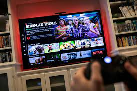

Fernanda Montalva Ormeño
Me llamo Fernanda Montalva, tengo 22 años
y estudio Direccion y diseño grafico.
- Lorem
- Ipsum
- Dolor

Que me gusta hacer en mis tiempos libres?

Ver peliculas y series
Disfruto explorar diferentes géneros y tramas, dejándome llevar por las historias y los personajes. Ya sea una película emocionante que me mantenga al borde del asiento o una serie que me atrape desde el primer episodio.
Ir al cine o leer
Disfruto tanto del cine como de la lectura, ya que ambos me transportan a mundos fascinantes y me permiten explorar diferentes perspectivas y emociones.
Otros gustos
-
Viajar
"Disfruto explorar nuevos lugares, sumergirme en culturas diferentes y descubrir la belleza única de cada rincón del mundo. Viajar me permite ampliar mis horizontes, aprender de experiencias diversas y crear recuerdos inolvidables que enriquecen mi vida.
-
Ver peliculas clasicas de Disney
Me encanta la magia y la nostalgia de las películas clásicas de Disney. Disfruto reviviendo los momentos de mi infancia y explorando los mundos fantásticos y personajes icónicos que estas películas ofrecen.
-
Jugar videojuegos
Disfruto de la diversión y la emoción que ofrecen, así como de los desafíos que me permiten superarme a mí mismo. Los videojuegos son una forma de escapar de la rutina y explorar mundos virtuales llenos de aventuras y posibilidades.
-
Escuchar musica
Disfruto de la variedad de emociones que evoca en mí, desde la alegría hasta la melancolía. La música es mi compañera en todas las situaciones de la vida, ya sea para relajarme, concentrarme o simplemente disfrutar del momento. .
-
Dibujar
Disfruto explorando diferentes técnicas y estilos, y cada trazo es una oportunidad para experimentar y mejorar mis habilidades. El dibujo me permite escapar a mundos imaginarios, crear belleza a partir de la nada y compartir mis creaciones con otros, lo cual me llena de satisfacción y alegría.
-
Jugar con mi mascota
Ya sea lanzando una pelota, enseñándole trucos nuevos o simplemente acurrucándonos, cada momento compartido fortalece nuestro vínculo y nos brinda felicidad. La complicidad y el cariño que compartimos hacen que cada día sea especial, y no hay nada que me haga sentir más completo que ver a mi mascota feliz y saludable.
Arcue ut vel commodo
Aliquam ut ex ut augue consectetur interdum endrerit imperdiet amet eleifend fringilla.